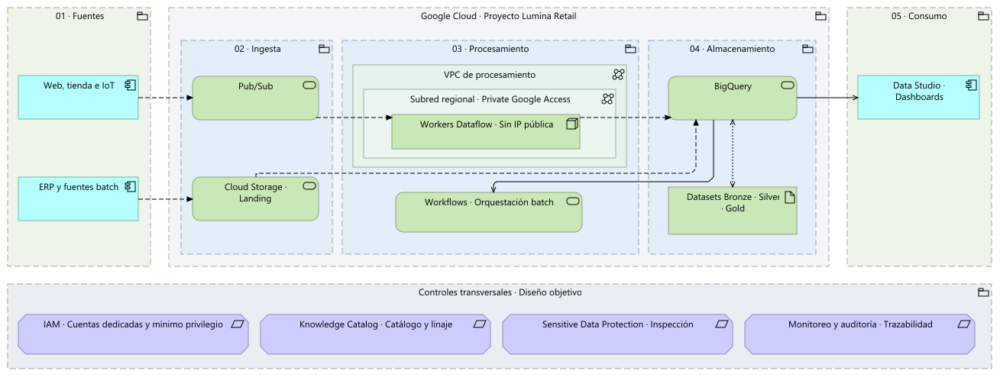

DIAGRAMA PRINCIPALAbrir PDF ↗

Componentes e integraciónEl caballo de batalla de la propuesta: fuentes, ingesta, procesamiento, productos de datos y consumo.
VISTAS DE ARQUITECTURAAS-IS → TO-BE
El diagrama de componentes e integración es el mapa principal. Desde aquí puedes recorrer todas las vistas que explican la solución.
